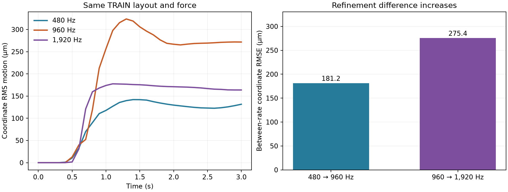

The tested Isaac setup has not passed numerical reliability checks. Further predictive fitting, bulk capture and active probing comparison wait for a controlled diagnosis.
The same fixed-patch TRAIN block, mesh, material, attachment geometry, camera and diagonal force were simulated at three physics rates. Full-trajectory coordinate RMS motion is 111.3,236.6 and148.4µm at480,960 and1,920Hz. Adjacent-rate differences are181.2 and275.4µm: comparable to the response itself and increasing with refinement. These three levels do not establish which response is accurate.

The fresh960Hz positions, velocities and force commands reproduce the previous960Hz run bit for bit. Zero-force motion remains about4.17nm. The commanded pulse impulse agrees with its analytic integral to1.38×10⁻¹¹N·s, saved clocks match the representable float32 timestep, and every rate passes the original sensor-state, mesh, fixture and force checks.
The original validator assumed a candidate named poke_0. These numerical captures name it zero_force. The original KeyError failures are retained; a source-pinned adapter changes exactly two reset-reference dictionary keys and reruns every check with its original tolerances. No trajectory or simulation result is repaired.
This is one-layout TRAIN diagnosis. It does not identify solver error, floating-point accumulation, finite deformation or attachment effects as the cause. The next declared tests vary solver iterations and translate the complete physical scene. Passing those checks would still leave mesh and attachment-model fidelity unresolved.
Full numerical results and input hashes · Validation adapter provenance · Preserved original validation errors · Executed protocol · Plot data · Figure PDF
Numerical reliability gate · Active campaign · Earlier sealed study